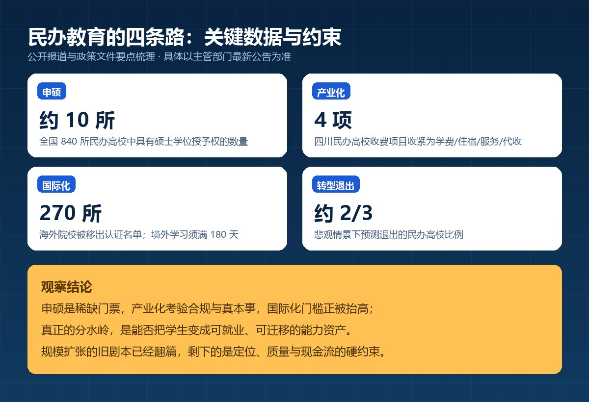

民办教育正在被逼到一道选择题前：往上走申硕，往实走产业化，往外走国际化，或者干脆收缩转身。四条路都不是口号，背后各有实打实的门槛与代价。一组公开数字足以让乐观情绪冷静下来——全国约 840 所民办高校中，具有硕士学位授予权的仅约 10 所；2026 年秋季起四川民办高校收费项目统一收紧为 4 项；全球已有 270 所海外院校被移出认证名单；有研究团队在最悲观情景下预测，约三分之二的民办高校或将退出。问题不是"哪条路最好"，而是"谁有资格走哪条路"。

一、申硕：一张稀缺门票，多数人买不到
2026 年 9 月，浙江越秀外国语学院获批硕士学位授予单位，翻译、国际商务、国际中文教育三个专业学位点同时落地，成为全国少数拥有硕士授予权的民办高校之一。这是一个标志性事件，却也标出了这条路的窄度——公开信息显示，目前全国仅约 10 所民办高校具有硕士学位授予权，在八百多所民办高校里占比刚过一个百分点。
申硕的价值不需多说：办学层次跃升、生源结构改善、品牌溢价提升。但它的门槛同样硬——学科积累、师资队伍、科研平台、培养质量，哪一个都靠时间堆出来，不是靠决策层的决心就能兑现。越秀能一次拿下三个点，靠的是 45 年办学积淀与外语学科的长期投入，而非临门一脚的运作。
对绝大多数民办本科而言，申硕更像一张看得到却摸不着的门票。把战略押在这条路上，意味着用十年周期去博一个低概率结果，而眼前 —— 生源、现金流、就业 —— 的压力按年计算。这是第一道现实：稀缺资源只向少数长期主义者开放，盲目跟风只会消耗本就紧张的办学资源。
二、产业化：从"以生养校"到合规经营
第二条路是把产业做实。2026 年 6 月，湛江科技学院集中揭牌 9 大产业学院，华为、360、优必选等企业到场，同步启动 20 个产教融合创新实验班；广州应用科技学院与宇树科技共建具身智能产业学院；吉利学院年均可获企业补贴约 2170 万元。这些数据说明，产教融合已经从标签走向账本。
但产业化的另一面是监管收紧。2026 年秋季学期起，四川民办高校收费项目统一为学费、住宿费、服务性收费和代收费 4 项，明确不得以校企合作名义向学生收取实习费、实训费、技能培训费、校企合作费。这一条直接戳中了不少院校的隐秘收入结构：过去一些"产教融合"实际上是向学生收费的通道，如今这条路被堵上。
更根本的压力来自收入模型。麦可思统计显示，近五年超八成民办本科最低学费上涨，均值从 1.9 万元/学年升至 2.4 万元/学年；与此同时，2026 年广东本科批次 107 所高校缺额 11422 个，其中 16 所民办本科缺额过万。"以生养校"的旧逻辑是：涨学费、扩规模、增收入。当生源下滑、学费见顶、收费项目又被压缩，这个循环就转不动了。
所以产业化真正的考题，不是办几个产业学院、签几家龙头企业，而是能否把"学历提供者"改造成"就业服务者"。武汉学院依托软件工程腾讯班、网络工程华为班等特色班，历史类最低投档线超批次线 50 分，说明市场愿意为真实就业能力付溢价。这条路对多数院校开放，但它考验的是课程重构、师资改造和真实项目供给，比挂牌要难得多。
三、国际化：门槛正在被系统抬高
第三条路是往外走。过去几年，中外合作办学、海外并购、跨境课程被不少民办院校视为突围捷径。但 2026 年的政策变化，正在把这条路的入口收窄。
教育部留学服务中心新版认证指南明确：全球已有 270 所海外院校被移出认证名单；中外合作办学项目境外累计学习时长须不少于 180 天，一年制硕士境外实际学习原则上不少于 6 个月；2023 年春季学期及以后入学、纯线上课程占比超过 20% 的不予认证；系统自动比对近 10 年出入境记录，旅游签"凑天数"无效。今年 4 月，春来教育约 10 亿港元收购都柏林商学院的交易完成交割，这类重资产布局与轻量化"水项目"的分野，恰恰说明国际化的门槛正在从"有没有合作"转向"有没有真实交付能力"。
这不是说国际化走不通，而是说靠信息差和项目包装赚钱的时代结束了。真正具备课程共建、学分互认、境外教学交付与质量保障能力的院校，会在洗牌后获得更干净的市场；而把国际化当成招生话术的院校，会在认证新规下陆续暴露。国际化从"概念红利"变成"能力红利"，这是第三个现实。
四、第四条路：承认收缩，把减法做对
前三条路之外，还有一条更少被讨论、却可能更适合多数院校的路——主动收缩与转型。它不体面，但可能最务实。
信号已经出现。2026 年 11 月，安徽省教育厅公示拟撤销安徽涉外经济职业学院，原因是举办者申请、连续三年年检未获评等次；10 月初，21 世纪教育集团被港交所取消上市地位，旗下院校此前已进入破产重整程序。另一组数据更直白：有研究团队预测，最悲观情景下到 2050 年民办高校在校生占比将降至 15%，约三分之二的民办高校退出；西安翻译学院将 14 个二级学院整合为 4 个学部，武汉、成都等地多所院校主动砍掉土木、传统经管等就业疲软专业。
职业本科也提供了一条转换通道。2026 年 2 月，教育部同意以江西泰豪动漫职业学院为基础设立南昌科技职业大学，成为民办非营利性本科层次职业学校；同年贵州、昆明各有职业本科升格。对部分办学基础扎实但学术积累不足的院校而言，从"压缩型普通本科"转向"特色型职业本科"，比硬挤申硕独木桥更符合自身条件。
承认收缩不是失败，而是把资源从无效扩张中抽出来，集中到真正有差异化的专业和区域产业上。浙江座谈会上提出的"不做第一就做唯一"，说的正是这个意思。对一批同质化严重的民办院校来说，砍掉一半专业、做实几个方向，比维持一个空转的"综合性大学"框架更有价值。
五、犀利一点说：三条路都在考同一道题
把四条路摆在一起，会发现它们并不是并列的选项，而是在考同一道题：学生交的学费，能不能换回可就业、可迁移的能力？申硕若只换来一纸层次更高的文凭而课程没变，溢价撑不过三年；产业化若只是把收费名目换了个说法，监管收紧就会先一步到来；国际化若只做境外时长造假，认证新规会把泡沫戳破；收缩转型若只是裁人砍专业而没有新能力沉淀，也只是延后出局时间。
另一道题是现金流。学费上涨空间有限、收费项目被压缩、生源下滑，任何战略都必须回答"钱从哪来"。企业与政府补贴、社会服务收入、成果转化、产教融合的真实回报，会成为比招生规模更重要的指标。那些还能维持现金流稳健、把每一分钱投向教学核心环节的院校，才有资格谈申硕和国际化。
六、趋势判断：未来三到五年会发生什么
其一，行业分化会从"规模分化"变成"能力分化"。约 30% 优质院校有望在数字化、国际化与产教融合中迈向乐观情景，约 30% 弱势机构可能在压力情景下退出。中间地带会被持续压缩，模棱两可的定位不再有生存空间。
其二，专业设置会向区域产业高度收敛。民办高校新增备案本科专业中占比已达 39.4%，远超其在校生规模占比，说明调整正在加速。能对接智能制造、数字商贸、大健康等区域产业链的院校，会逐步把"通用专业"挤出主干。
其三，监管会继续朝"信息公开、成本可核、收费可溯"方向收紧。收费项目统一、成本信息公开、调整周期限制不会是孤例，其他省份大概率跟进。财务透明度将成为基本门槛，而非加分项。
其四，"出海持有"与"在地深耕"会分化为两种模式。少数头部机构会像收购海外院校那样配置全球资产，多数院校则会把资源投向本地产业与就业网络。中间那种"签一堆合作协议却没有真实交付"的模式，会最早被淘汰。
结语
申硕是稀缺门票，产业化考验真本事，国际化门槛正在抬高，收缩转型则要求承认现实的勇气。四条路的终点并不相同，但起点是同一个：先把学生当成需要被培养目标的人，而不是维持现金流的数字。谁先把这件事做实，谁就不需要在四条路之间焦虑选择——路会自己打开。